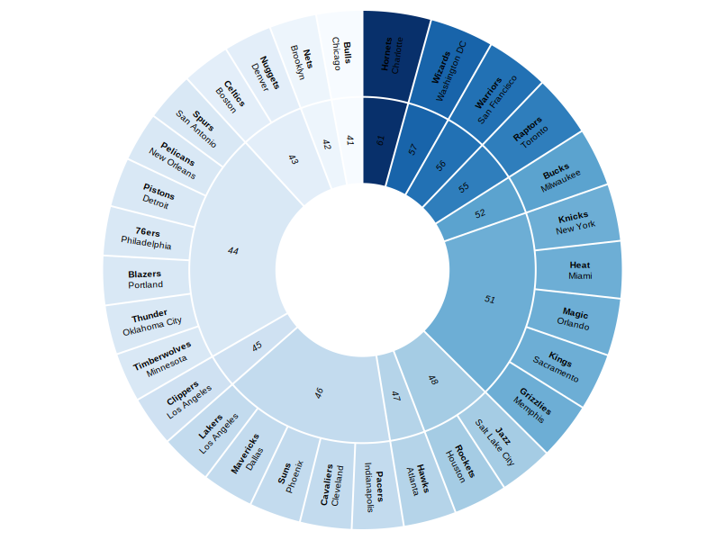

Le choix d'un sujet a été l'objet d'une longue réflexion pour moi. Mes premiers choix étaient d'ailleurs très éloignés du sujet final : je souhaitais d'abord me concentrer sur un sujet politique, comme les revenus des cadres de la fonction publique, ou encore essayer de fournir un travail sur les gouvernements qui légifèrent le plus sous la V° République. Cependant, par manque de données, j'ai été contraint d'abandonner ces sujets, et je me suis alors tourné vers un domaine plus historique : je voulais m'intéresser à la gestion du patrimoine français, notamment des monuments. Ce sujet aurait pu me permettre de créer des cartes au niveau régional, de comparer les régions entre elles, de rattacher chaque situation à un contexte historique et une culture propre. Mais, là encore, les données étaient éparses et le rendu ne me satisfaisaient pas.
J'estime tout de même qu'il aurait été possible de fournir un travail et de collecter des données à propos des sujets évoqués précédemment, mais le temps jouait en ma défaveur, et j'ai donc opté pour une autre approche.
Dans la nuit du lundi 6 au mardi 7 février 2023, LeBron James est devenu le meilleur marqueur de l'histoire de la NBA (National Basketball Association), la ligue nord américaine de basketball, qui peut être considérée comme l'organisme de basketball le plus réputé au monde.
LE SHOOT DE LEBRON POUR LE RECORD ALL TIME ⭐️⭐️⭐️⭐️⭐️pic.twitter.com/3LBMbtDkul
— TrashTalk (@TrashTalk_fr) February 8, 2023
Ayant moi-même fait du basket pendant de longue année et étant un grand fan de NBA, mon sujet pour ce travail de datavisualisation m'a paru tout trouvé :
L'idée à l'origine de ce projet est de mettre en valeur et en contexte la carrière de LeBron James grâce à l'apport des statistiques et des outils de datavisualisation. Dans un sport aussi sujet à débat que le basketball, l'une des questions qui revient souvent et qui anime des débats bien virulents concerne le GOAT (Greatest Of All Time) : qui de LeBron James ou de Michael Jordan est le plus grand joueur de basketball de l'histoire ? Y a-t-il d'autres sportifs qui peuvent revendiquer cette position ? Il serait inutile de chercher à répondre à ces questions, qui plus en se focalisant sur le domaine statistique, qui est bien subjective selon les générations, les équipes supportées ou même les affinités avec leurs personnalités respectives. Mon parti pris dans ce projet est donc uniquement de mettre en contexte la carrière de James, dans le but de mettre en valeur ses accomplissements et d'isoler certaines des nombreuses raisons de son succès.
Ma volonté est aussi de permettre à des novices qui ne connaissent pas ou peu la NBA, de comprendre un peu mieux le monde du basket. Pour ce faire, j'ai pris la décision de laisser volontairement de côté certaines statistiques qui me paraissaient trop poussées et peu représentatives, en me concentrant sur d'autres qui me paraissent plus parlantes et facile à comprendre.
Le basketball est un sport collectif qui se joue en 5 contre 5 (il existe une version en 3 contre 3, mais elle ne sera pas abordée dans ce travail), avec des équipes composées de 15 joueurs au total. Contrairement au foot, les changements entre joueurs sont illimités et peuvent se faire à chaque arrêt de jeu, afin de permettre au coach d'adapté son équipe à ses besoins. Chaque équipe attaque d'un côté du terrain, et la possession change lorsque l'un tir est marqué, lorsque le ballon est intercepté par la défense ou lorsque le ballon est récupéré par la défense après un tir raté.
Le but est de mettre le ballon dans un panier (vous vous en doutez) grâce à un tir. Selon la zone dans laquelle il est pris, le tir vaudra plus ou moins de points. Comme vous le voyez sur l'image suivante, les tirs pris dans la zone délimitée par la ligne en arc de cercle valent deux points. Les tirs pris en dehors de cette zone valent quant à eux 3 points. Dans la cas où une faute est commise lorsque un joueur tire, ce dernier pourra tirer des lancers-francs : le jeu est arreté, le joueur se place dans le carcle orange en tête de carré violet, et chacun des tirs marqués rapportera 1 point. Si le tir pris valait 2 points, le joueur tirera 2 lancers-francs, si le tir valait 3 points il en tirera 3. Dans le cas où une faute est sifflée mais que le tir est quand même rentré, les points du tir seront accordés et le joueur tirera 1 lancer-franc supplémentaire.
J'ai évoqué dans l'introduction la richesse de la NBA au niveau historique et statistique, et il y a plusieurs raisons à cela. La NBA est le résultat d'une fusion entre deux ligues, la BAA (Basketball Association of America) et la NBL (National Basketball League), en 1949. Elle jouit d'une très grande popularité aux Etats-Unis, étant considérée comme l'une des 4 ligues majeures de sport du pays, et d'un rayonnement sans égal à l'échelle mondiale qui la place en position de monopole : elle attire les meilleurs joueurs, les jeunes les plus prometteurs, offre les meilleurs salaires pour des sportifs professionnels et conserve ses joueurs pendant de nombreuses années.
Sa saison est composée de 82 matchs dit de saison régulière, qui permettent d'établir un classement entre les 30 équipes qui la composent. Son championnat est réparti en deux conférences, Est et Ouest, chacune composée de 15 équipes. Les 8 équipes les mieux classées dans chaque conférence au terme de la saison régulière s'affrontent lors des phases finales, que l'on appelle playoffs : ce sont des séries au meilleur des 7 matchs, c'est-à-dire que pour accéder au tour suivant, une équipe doit battre son adversaire 4 fois. Après trois tours, la meilleure équipe de chaque conférence affronte celle de l'autre au cours des finales NBA. Pour être sacré champion NBA, il faut donc cumuler 16 victoires et ne pas perdre 4 fois contre la même équipe. Les joueurs qui font de longue carrières dans la ligue jouent donc énormement de matchs, ce qui va beaucoup nous intérresser dans le cadre de ce travail. Depuis quelques années, la NBA a adopté le concept de playin, qui permet de jouer les deux dernières places qualificatives en playoffs lors d'un tournoi opposant les équipes classées 7, 8, 9 et 10 de chaque conférence. Cette innovation étant récente, elle ne revêt pas une très grande importance pour ce travail.
La NBA étant une ligue basée aux Etats-Unis et au Canada, la plupart des termes utilisés sont en anglais, notamment pour les trophées indivudels et collectifs. De plus, le basketball est un sport avec des règles bien à part et certaines notions doivent donc être clarifiées. C'est pourquoi la liste suivante propose des définitions et des explications, sur lesquelles s'appuyer pour mieux comprendre le travail.
James fait son entrée dans la ligue en 2003, alors âgé de 18 ans, en étant sélectionné en première position d'une draft pourtant réputée comme l'une des meilleures de l'histoire. Dès sa première saison, il remporte le titre de ROY et s'impose comme l'un des grands noms en NBA. Les statistiques de sa première saison montre d'ailleurs son impact : malgré des performances au shoot moins bonnes que les autres joueurs de sa génération, il termine meilleur passeur et quasiment meilleur scoreur à égalité avec Carmelo Anthony.
Les graphiques qui suivent permettent de comparer la carrière de LeBron James avec celles des grands joueurs de sa Draft. Il est important de noter que James est le seul joueur de sa Draft qui n'a pas pris sa retraite, participant au moment d'écrire ces lignes à sa 20e saison NBA. On remarque donc qu'ne plus d'être le joueur de sa Draft avec la meilleure longévité, il est aussi au-dessus des autres dans la plupart des catégories statistiques et pèse dans tous les domaines du jeu : meilleur scoreur, meilleur passeur, deuxième meilleur rebondeur, des pourcentages au shoot un peu supérieurs aux autres sauf aux lancers-francs. Il est aussi le joueur avec le plus de récompenses ou de trophées, avec 4 titres NBA au moment d'écrire ces lignes, et le seul MVP de sa Draft. Il est aussi important de préciser que James a joué pendant 4 saisons avec Wade et Bosh au Miami Heat, remportant deux fois la NBA sur cette période.
On constate donc que LeBron a fait son entrée en NBA en étant déjà près à jouer au plus haut niveau, du moins si on le compare aux autres joueurs de sa génération. Mais d'un point de vue historique, ces statistiques sont-elles si impressionantes ? Les visuels suivants semble nous démontrer que non : LeBron James appartient bien à une élite, mais on remarque qu'un certain nombre de joueurs étaient bien plus impressionants, notamment au niveau du scoring et de la réussite au tir, dès leur arrivée dans la ligue. Si James a pu devenir leur meilleur marqueur de l'histoire de la NBA, ce n'est donc pas uniquement car il a été fort très jeune.
Si le début de carrière de James est bon sans être exceptionnel, c'est sans doute avec la suite de sa carrière qu'il a pu devenir le meilleur marqueur de tous les temps. Dans le visuel suivant, on va donc se pencher sur l'évolution de ses moyennes au cours de sa carrière, afin de voir si l'on peut déceler des informations.
On observe une importante progression en terme de points marqués par match dès sa deuxième saison, ainsi qu'une régularité remarquable : sa pire saison au scoring, en dehors de sa première année, est lors de la saison 2020-2021, avec "seulement" 25 points par matchs, tandis que sa meilleure saison est en 2005-2006, avec 31.4 points par match. Cette régularité s'applique dans les autres statistiques (passes, rebonds, pourcentages aux tirs et même minutes jouées par match), les seules variations importantes concernant les matchs joués par saison. Cela s'explique par plusieurs raisons, comme des blessures (2020-2021 et 2021-2022), ou bien des saisons raccourcies (épidémie de Covid-19 en 2018-2019, grève en NBA en 2011-2012). Il est aussi important de noter que la dernière saison affichée n'est pas encore terminée, et que les chiffres peuvent encore évoluer.
Cette régularité se traduit s'observe lorsque l'on regarde les records de points marqués de LeBron face à chaque équipe de la ligue : sa performance la plus faible est contre les Chicago Bulls, contre lesquels son record est de seulement 41 points en un match.
Là encore, pour vérifier si cette régularité est un cas commun, il est nécessaire de comparer ces moyennes avec celles d'autres grands joueurs. L'échantillon est volontairement très réduit, afin de faciliter la lecture et la compréhension des données, en plus de LeBron James, j'ai sélectionné Michael Jordan, Kareem Abdul-Jabbar et Kobe Bryant, trois athlètes souvent évoqués comme les plus grands joueurs de basket de tous les temps.
Ce sont aussi trois joueurs ayant eu des carrières quasiment aussi longue que LeBron (au moment d'écrire ces ligne du moins) : une carrière de 20 ans pour Kareem Abdul-Jabbar, 20 ans pour Kobe Bryant, et une carrière étalée sur 19 ans mais avec 4 ans de pause pour Michael Jordan. Cela permet d'avoir un regard sur les performances à un âge plus avancé pour ces joueurs, et l'on remarque que LeBron est bien plus performant que les autres à partir de sa 17e saison. Mais je vais abprder la question de la longévité plus en détail dans la prochaine partie.